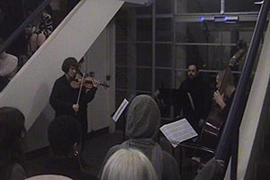
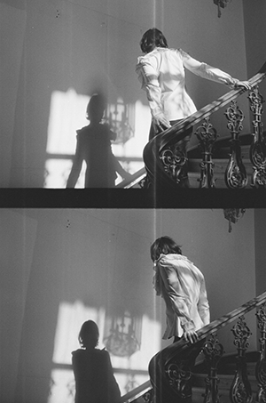
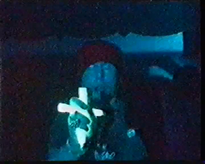
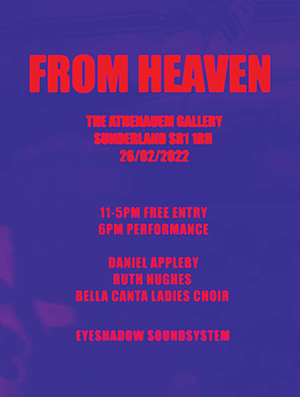
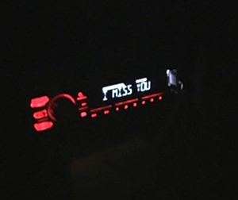

exlruth
Opera Sunday
Excelsior Ruth (dj)
news
writing
images
exlruth projects (composing & live performance)
carefully
02/11/24 - FIREWORKS IV, Ormside Projects, London
live score performed by
Adela Philippa - violin
Caius Williams - double bass
Nik Rawlings - voice

Romeo's Fall
23/03/24 - Assembly, Somerset House, London
live score performed by
Caius Williams - double bass
Nik Rawlings - voice

from heaven
10/11/23 - bandcamp
featuring
Bella Canta Ladies Choir
Caius Williams - double bass
Stead - cello

FROM HEAVEN
26/02/22 - The Athenaeum, Sunderland
score performed by Bella Canta Ladies Choir
moving image work from Daniel Appleby
curated by Ruth Hughes

Angelus Enim
09/01/22 - Teaching Computers to Love, Resonance FM Xtra
35:00-44:48
score performed by
Rubie
Ciara Reddy
To the Crew
01/06/22 - Current Transmissions, ICA, London
featuring MC SPEED
